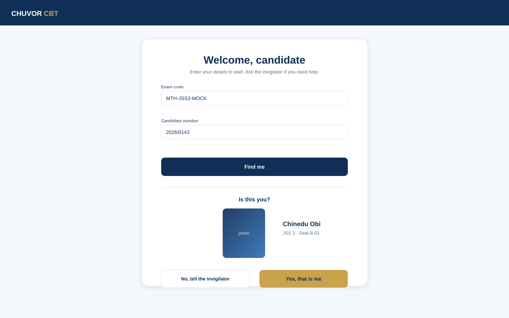
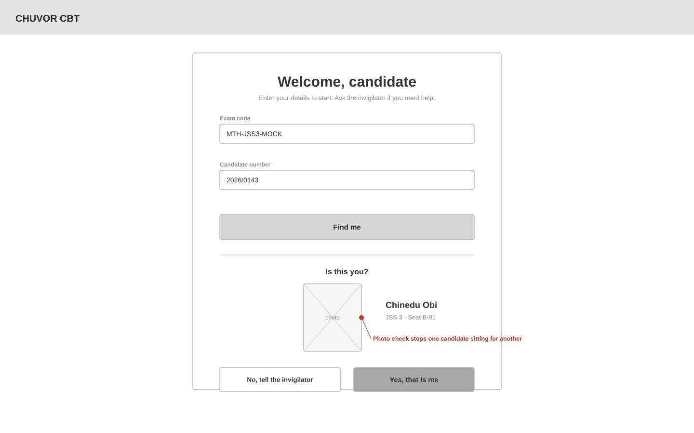
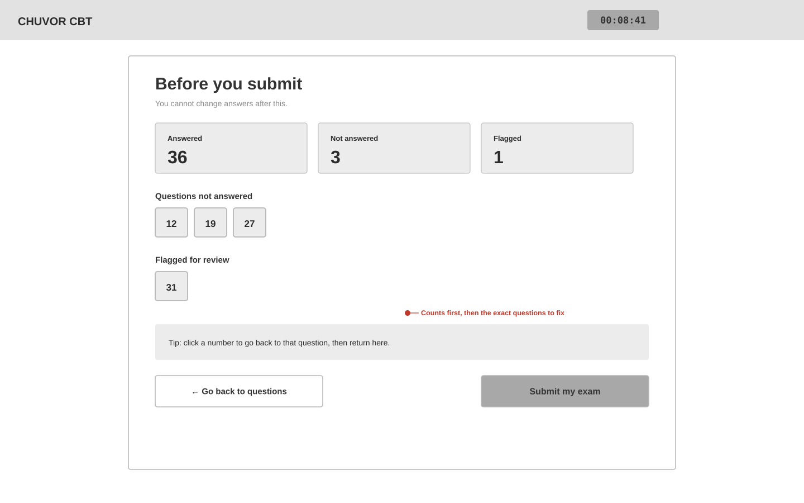
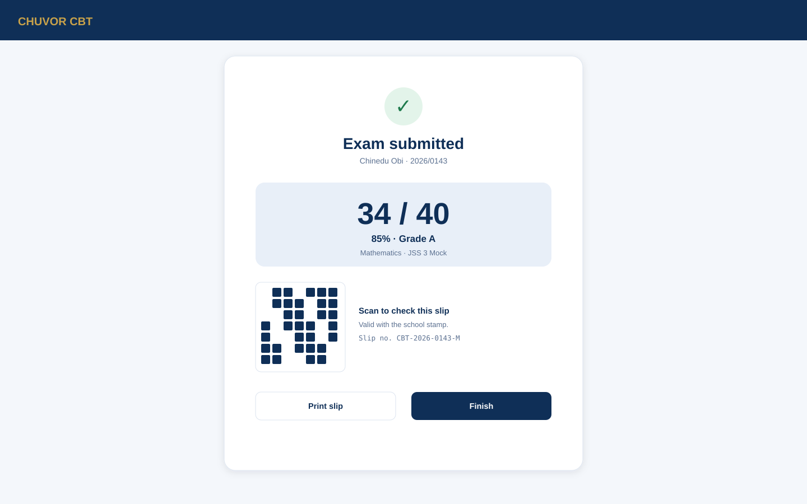
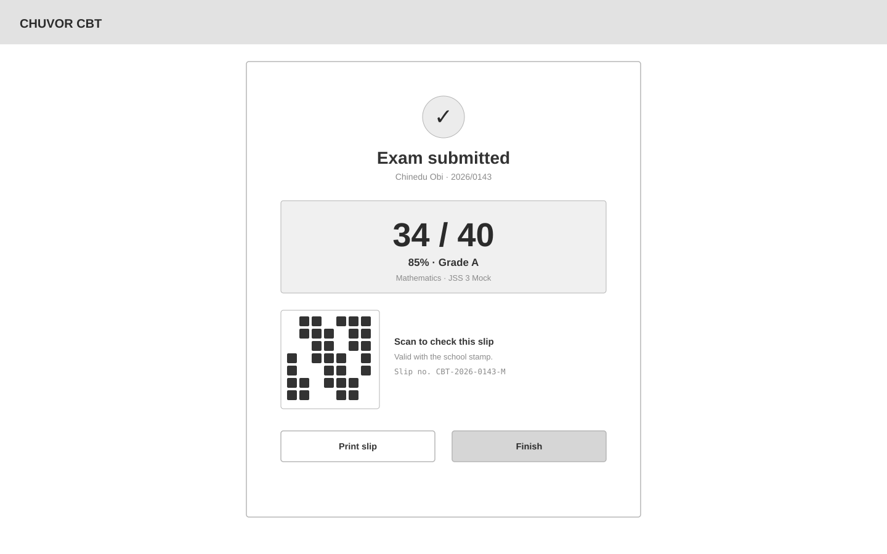

Chuvor CBT runs computer-based exams on a local network with no internet. I built the candidate’s exam screen, the invigilator’s live monitor, question import, theory marking, reports and licensing.
Year
2026
Category
Exams · Offline software
My role
Designer and engineer
Stack
ASP.NET Core · Razor Pages · SQL Server · JavaScript (fetch) · MathJax
Exam halls are stressful and the network is not perfect.
A lost answer or an accidental submit is a serious mistake for a young candidate.
The person in the hall must see every candidate at once and act fast.
Candidates should not be able to leave the exam page unnoticed.
This led to· Fear of losing work · Invigilators guessing · Little trust in the system
(02)
Solution
One question at a time with a numbered palette, a save queue that never gives up, a server-synchronised timer, and a live monitor that tells the truth about how fresh its picture is.
(03)
Key design decisions
1.
A save queue that never gives up
Every answer is versioned and re-sent with exponential back-off until the server confirms.
A status line says “All answers saved”, “Saving” or “2 not saved, retrying”.
Anything that is not valid JSON (a login page, an error) counts as a failed save, so the answer is kept.
2.
A palette that says where you are
Current, answered, unanswered and unsaved are four clearly different states, not colour alone.
The timer counts to a deadline and re-synchronises with the server clock every 20 seconds.
Mathematics shown with MathJax.
3.
A live monitor that is honest
Refreshes every 3 seconds, one request at a time, slows to 8 seconds on a bad connection and shows a banner when the picture may be out of date.
Filtering and paging happen on the server so a large hall stays fast.
Actions such as ending an attempt or giving extra minutes say plainly what happened.
Live monitor
4.
Integrity without drama
Tab switches, copy and paste are reported; too many violations submit the exam automatically.
A phone’s screen is kept awake during the exam.
A lost violation report can never break the exam.
(04)
Outcome
Released and sold as computer-tied licences.
Designed for hundreds of candidates at once and checked with a scripted load test before release.
Question import, theory marking and class reports built into the same product.
(05)
My role
Exam screen and live monitor: interaction design and code.
Save queue, timer and integrity logic in JavaScript.
Back end, licensing and installer.
(06)
Key takeaway
In a high-stakes moment, the interface’s job is to remove doubt: say what is saved, say what is fresh, and never lose the user’s work.
Concept screens. These are design ideas I have drawn but not built.


Concept: sign-in with photo check

Concept: review before submit


Concept: result slip with verification code
See the code Real code from this product, with the problem it solves.